▦
O Campo de Batalha
O jogo acontece em um tabuleiro de 64 casas alternadas entre claras e escuras.
Entenda o essencial da partida antes de conhecer as peças
O jogo acontece em um tabuleiro de 64 casas alternadas entre claras e escuras.
As peças Brancas sempre fazem o primeiro lance. Depois, os jogadores alternam um movimento por vez.
Xeque é quando o Rei está sob ataque. Xeque-mate é quando o Rei não tem saída legal e o jogo termina com vitória.
Se o jogador da vez não está em xeque mas não possui nenhum lance legal, ocorre o afogamento e o jogo empata.
A trilha completa para começar a jogar xadrez
Os primeiros a entrar em batalha e os únicos que nunca dão um passo atrás. Embora pareçam humildes, carregam o potencial de se tornar a peça mais poderosa do tabuleiro.
Regras básicas do peãoCada jogador começa com 8 peões.
Movimento:Anda 1 casa para frente por vez e nunca volta. No primeiro lance, pode andar 1 ou 2 casas se o caminho estiver livre.
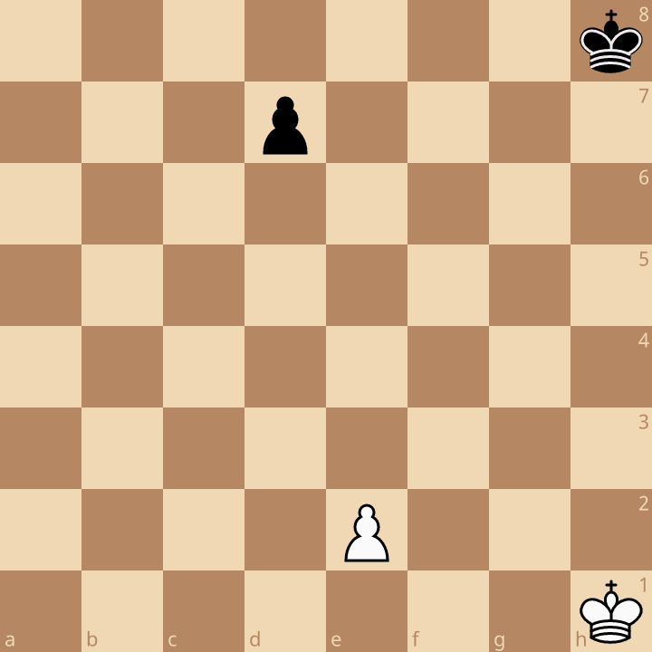
Avança 1 casa (ou 2 no início), não anda se bloqueado e captura na diagonal.
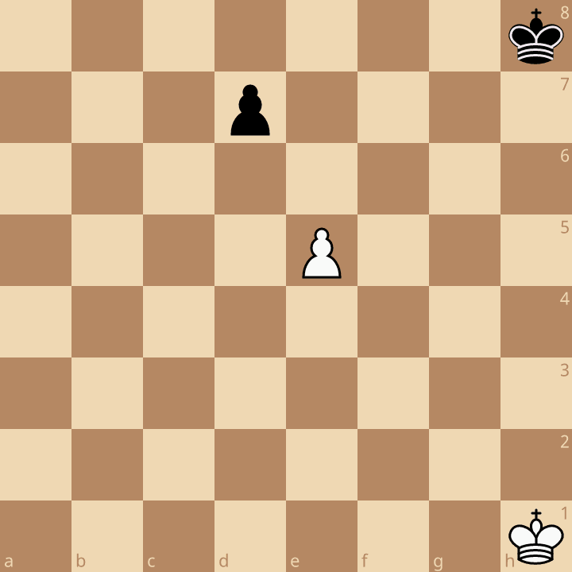
Captura especial: pega o peão inimigo que avançou 2 casas ao lado do seu (apenas no lance seguinte).
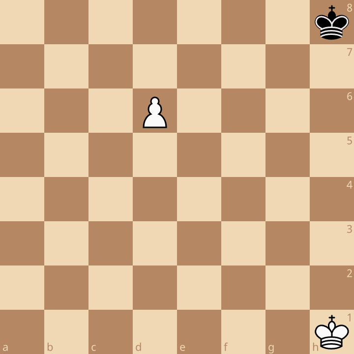
Ao chegar no fim do tabuleiro, vira dama, torre, bispo ou cavalo.
Ágeis e imprevisíveis, ignoram barreiras e saltam sobre as linhas inimigas onde ninguém espera. Sua habilidade de atacar de ângulos ocultos cria o caos nas defesas adversárias.
Regras básicas do cavaloCada jogador começa com 2 cavalos.
Movimento:Anda em formato de "L" (duas casas em uma direção e uma para o lado) e é a única peça que pode pular sobre outras.
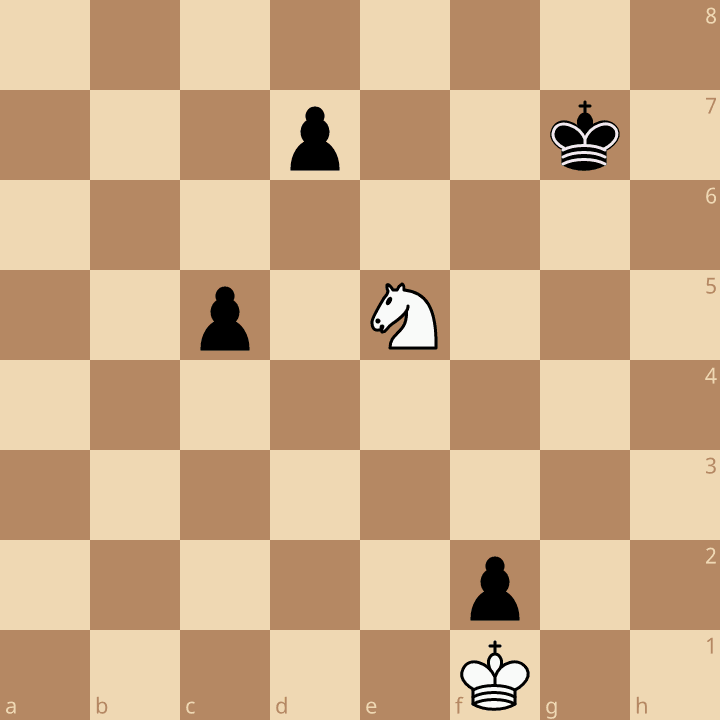
Move-se duas casas na vertical ou horizontal e uma para o lado, formando um "L".
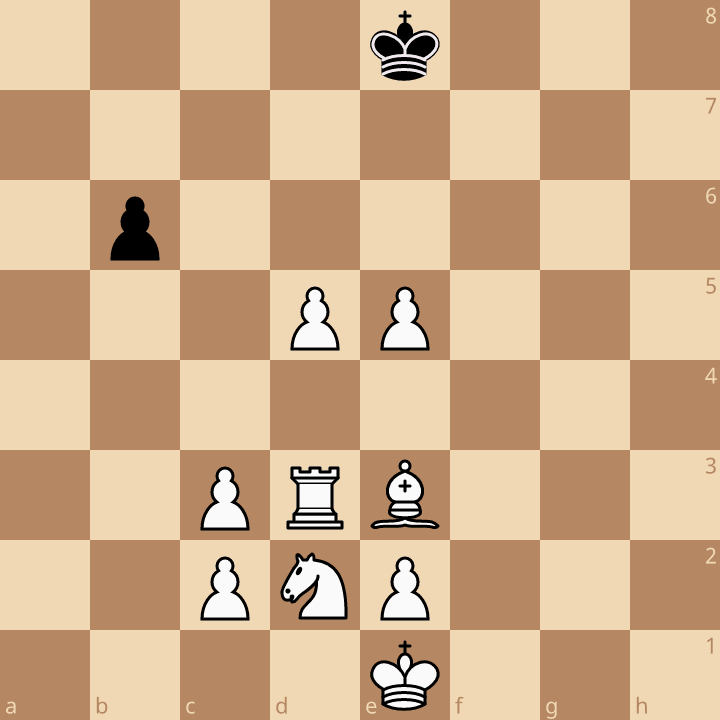
É a única peça do jogo capaz de pular por cima de peças aliadas ou inimigas.
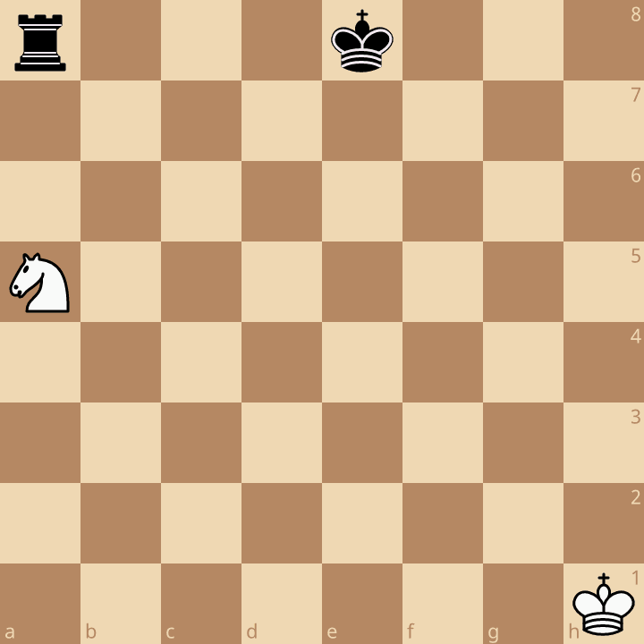
Captura apenas a peça inimiga que estiver na casa final onde o "L" termina (nunca as peças que ele pula).
Mestres da precisão de longo alcance, cortam o campo de batalha em ângulos silenciosos. Cada bispo domina apenas uma cor do tabuleiro, tornando a dupla letal quando atua em conjunto.
Regras básicas do bispoCada jogador começa com 2 bispos (um nas casas claras e outro nas escuras).
Movimento:Anda quantas casas quiser apenas nas diagonais, desde que o caminho esteja livre.
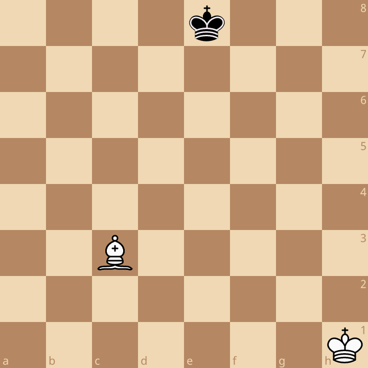
Desliza quantas casas quiser na diagonal, para frente ou para trás, sem pular peças.
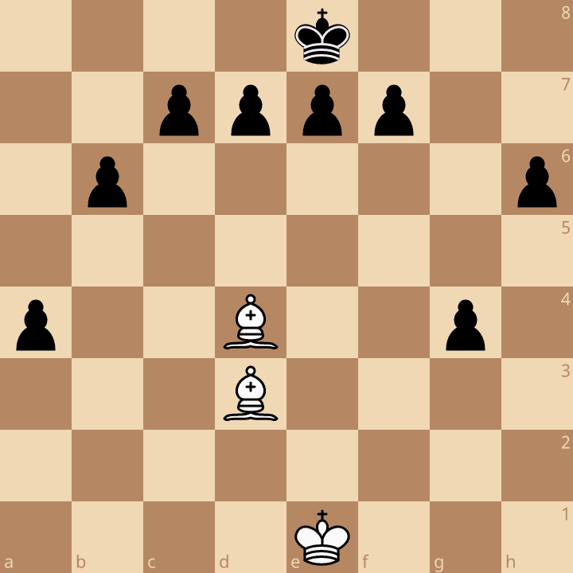
Nunca muda a cor da casa em que começou — o bispo da casa clara só anda nas claras.
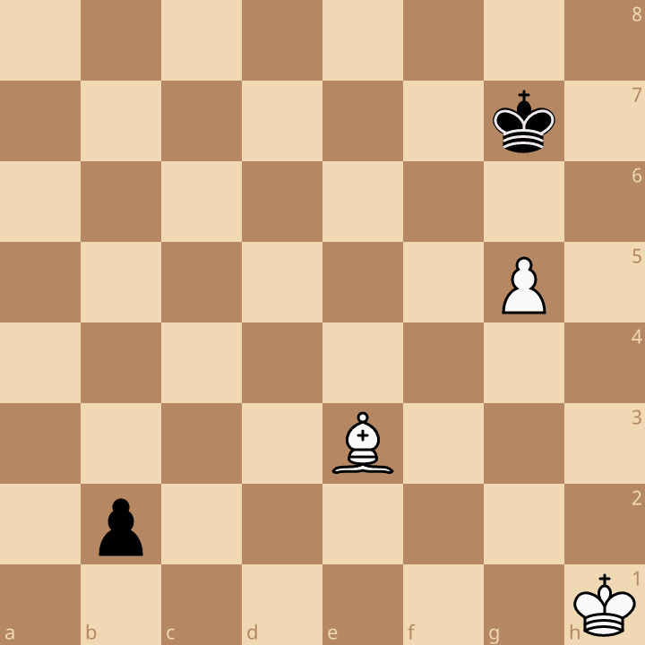
Captura a primeira peça inimiga que encontrar na sua diagonal, ocupando o lugar dela.
Guardiãs dos flancos do reino, avançam como colossos imparáveis em linhas retas. Quando entram em jogo com colunas abertas, dominam o território e esmagam as defesas adversárias.
Regras básicas da torreCada jogador começa com 2 torres (nos cantos do tabuleiro).
Movimento:Anda quantas casas quiser na horizontal ou na vertical, desde que o caminho esteja livre.
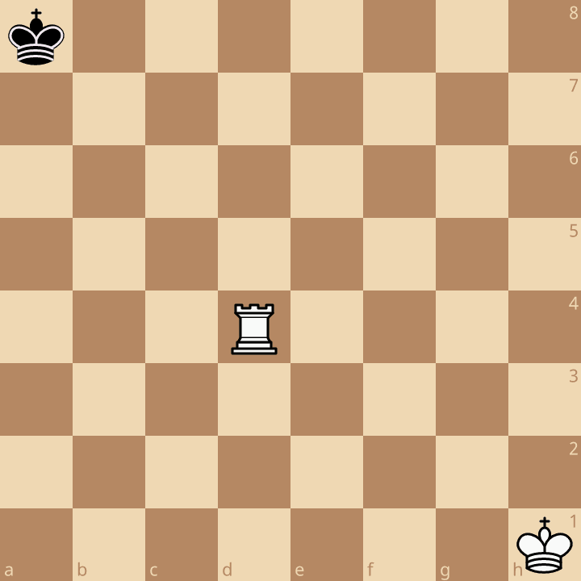
Desliza quantas casas quiser para frente, para trás ou para os lados, sem pular peças.
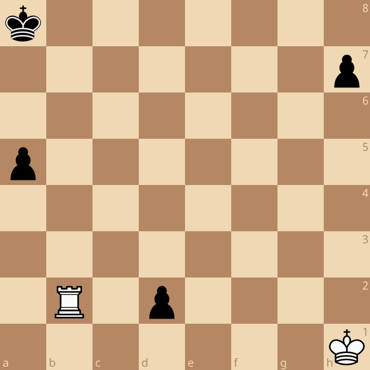
Captura a primeira peça inimiga no seu caminho reto, ocupando a casa dela.
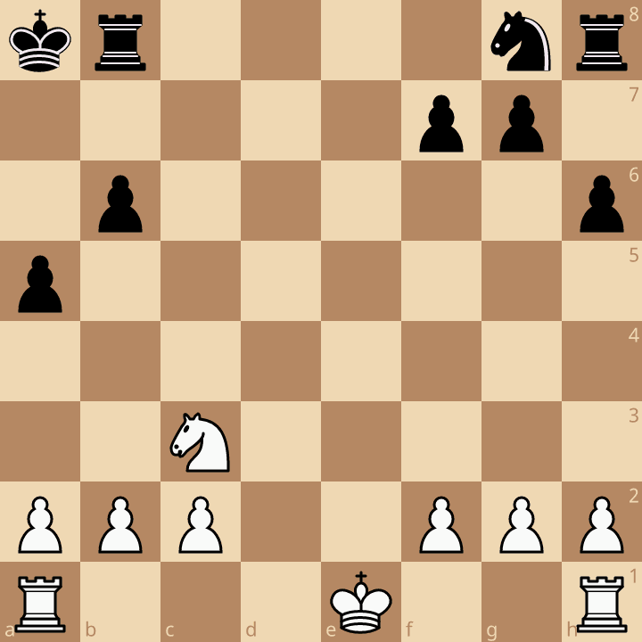
Movimento especial em conjunto com o Rei para proteger o monarca e ativar a torre rápido.
A força mais temida e versátil de todo o tabuleiro. Combinando o alcance implacável da torre e a precisão mortal do bispo, domina todas as direções e decide o destino da batalha.
Regras básicas da damaCada jogador começa com 1 dama (sempre na casa da sua própria cor).
Movimento:Anda quantas casas quiser na horizontal, vertical ou diagonal, desde que o caminho esteja livre.
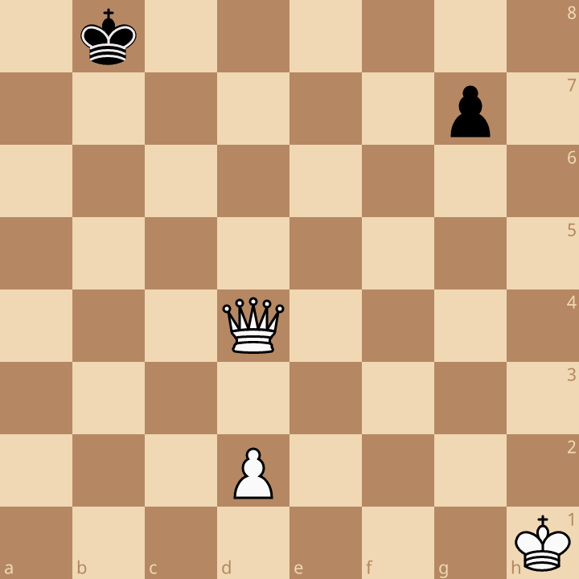
Combina os poderes de torre e do bispo, deslizando em linhas retas e diagonais.
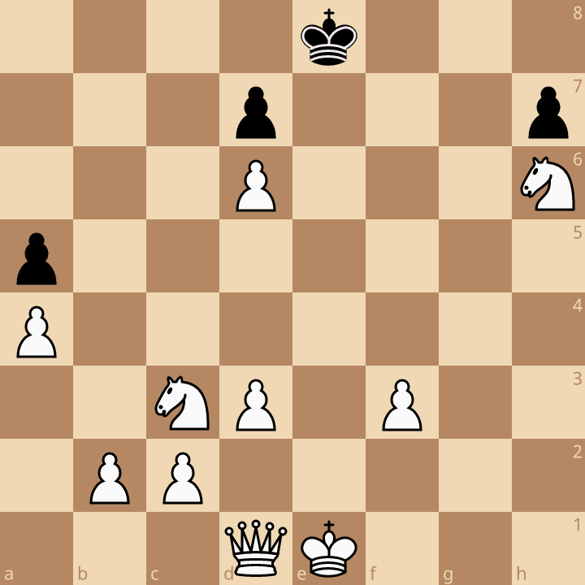
Apesar de ser a peça mais forte, não pode pular por cima de outras peças.
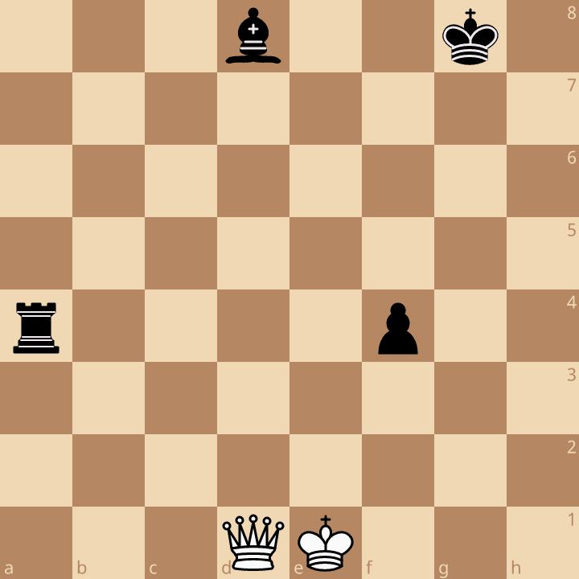
Captura qualquer peça inimiga no seu alcance direito, ocupando a casa dela.
A peça mais importante do jogo: se ele cair, a partida acaba. Lento e vulnerável, precisa ser protegido a todo custo enquanto ajuda no ataque nos momentos finais.
Regras básicas do reiCada jogador começa com 1 rei.
Movimento:Anda quantas casas quiser na horizontal, vertical ou diagonal, desde que o caminho esteja livre — mas apenas 1 casa por vez.
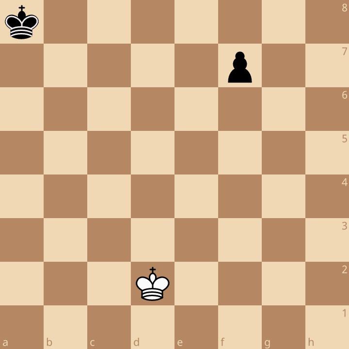
Anda e captura apenas 1 casa por vez em qualquer direção (horizontal, vertical ou diagonal).
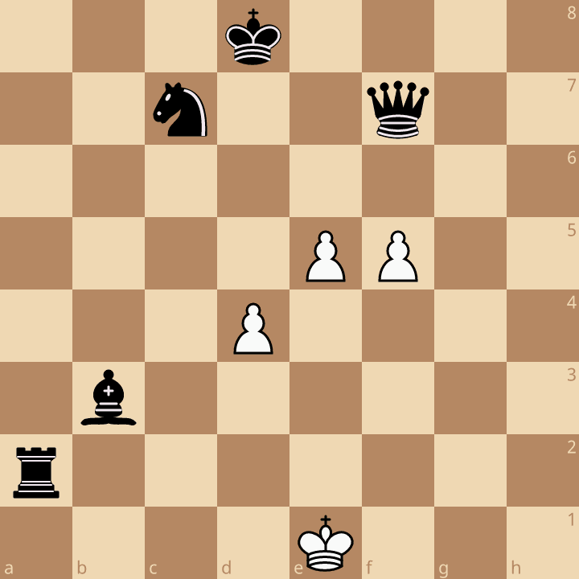
Nunca pode entrar ou ficar em uma casa atacada por uma peça inimiga.

Movimento defensivo especial feito junto com a torre para colocar o rei em segurança no canto.
Você parte para o ataque sem medo, arma emboscadas ou constrói uma defesa impenetrável? Descubra agora!
Descobrir meu estilo →